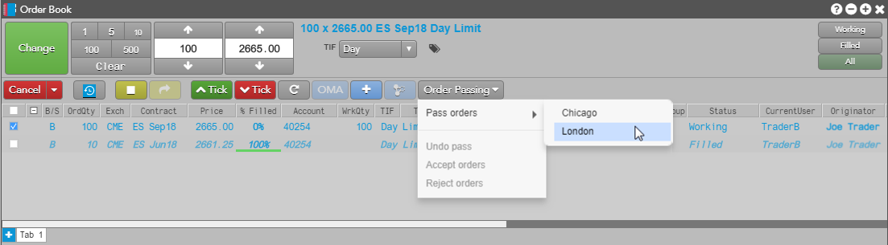
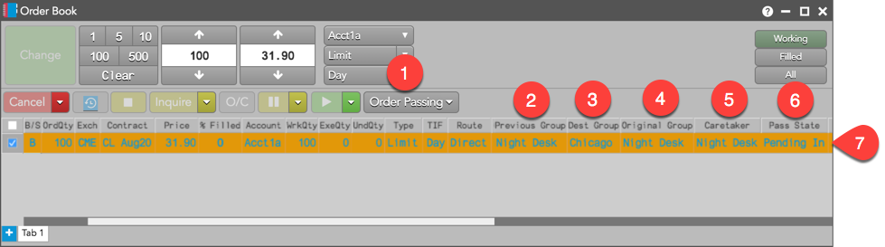

The Order Book widget supports order passing, which allows traders to pass the visibility and management of open, working orders to another trader or group of traders. Passing an order to another “caretaker” ensures the order is executed and managed correctly while not being watched by the originator of the order. While the pass is performed, the order continues to work and position in queue is maintained.

Traders and groups can perform the following roles when passing or accepting orders:
- Originator — User who placed the original order.
- Caretaker — User or group that is monitoring an order that they did not place.
Note: The orders pane of the Orders and Fills widget also supports order passing.
How Order Passing works
Order passing is configured on a user group level by your administrator using Setup in TT. Order passing occurs when a trader in one user group initiates order passing to another user group. A trader cannot "pull" an order from another group.
While an order is being watched by a caretaker group, the order originator and all traders sharing the account with the originator have full visibility of the order, and see updates and partial fills as they occur. Control of a passed order is shared by both user groups, allowing either group to take immediate action on the order as needed. When passing an order, the two groups do not need to share accounts.
There is no disruption to an order during the passing process. Passed orders continue to work in the market and retain their position in queue throughout all steps of the passing process (pending pass, accept, reject, undo, etc.). The order originator remains the user who originally placed the order.
Risk remains with the account used to submit the order and follows the order as it is passed. To pass and accept orders, refer to Passing and Accepting Orders. For an example of order passing, refer to Night Desk Support.
Order passing support in the Order Book
The Order Book widget displays the following to support order passing:

Note: The following button and columns are optional and can be shown in Settings: Order
Book using the right-click context menu.
- Order Passing — An optional button on the Order Toolbar that is used by the originator to pass an order, and used by the caretaker to accept or reject a passed order from the originator. Click the button’s drop down arrow for a list of actions:
- Pass orders: Passes an order to a user group. You can only pass orders to a group that has an order passing relationship set up with your group.
- Accept: Accepts an order passed from an originator or other caretaker.
- Reject: Rejects a passed order.
- Undo Pass: Cancels the caretaker selection.
- Previous Group — {% include columns/col-previous-group.html %}
- Dest Group — Identifies the target order passing group that you are passing the order to. When shown, this column is blank until an order is passed.
- Original Group — Identifies the order passing group that initiated the order pass. When shown, this column is blank until an order is passed.
- Caretaker — Identifies the user group monitoring an order. If no order was passed, this column is blank. For the caretaker’s group, this column shows the group that passed the order to them. Their group name is highlighted until the order is accepted. After accepting a passed order, the Caretaker column displays the name of the current group that is managing the order. The value in this column is visible to both the group passing the order and the group accepting the order.
- Pass State — Shows the state of a passed order. Two states are possible:
- Pending Out: Indicates that you passed an order to a user group, but the order hasn't been accepted yet. The column goes blank after you undo an order pass.
- Pending In: Indicates another user group passed an order to you and is pending your acceptance. The column goes blank after you accept or reject an order pass.
- Order Book rows for passed orders — Orders in a pending pass state (i.e., pass has been initiated but not yet accepted) will auto sort to the top of the book and be identified by a light orange background color. Passed orders that are filled will automatically sort to the bottom of the Order Book widget and be displayed in italics with faded colors.
Order Passing Sounds
The following sounds can be enabled in the Orders section of the Preferences | Sounds page.
- Pending Pass — Plays on the workstation of the target group when a passed order arrives for that group. “Default = Notify”. Enabled by default.
- Rejected Pass — Plays on the workstation of the target group when a passed order is rejected by that group. “Default = Down”. Enabled by default.